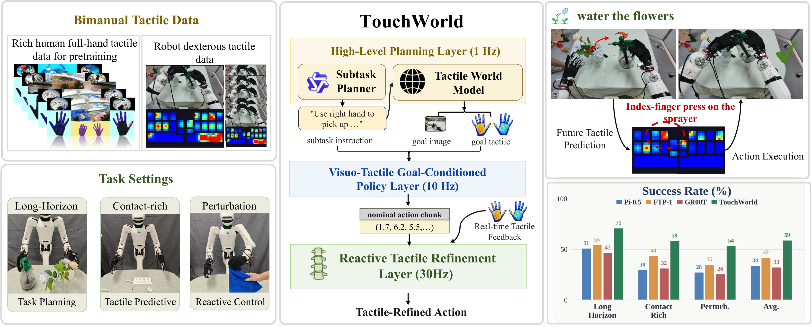
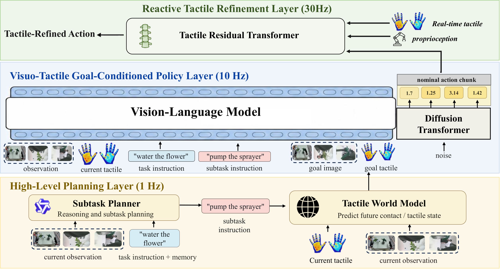
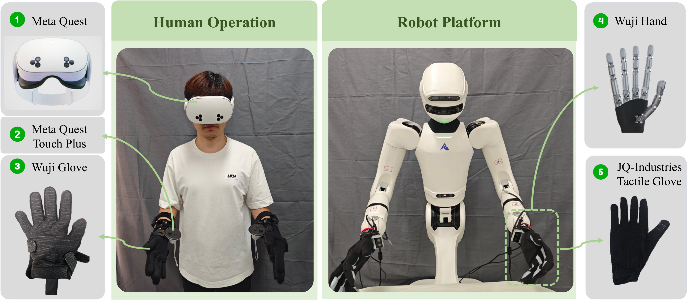
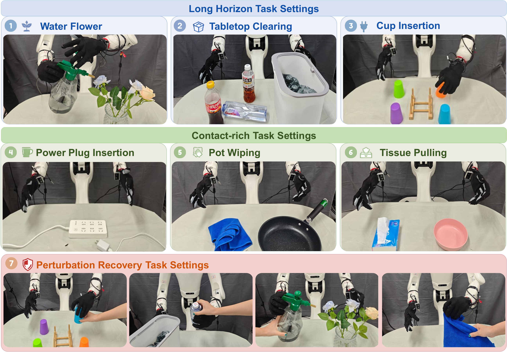
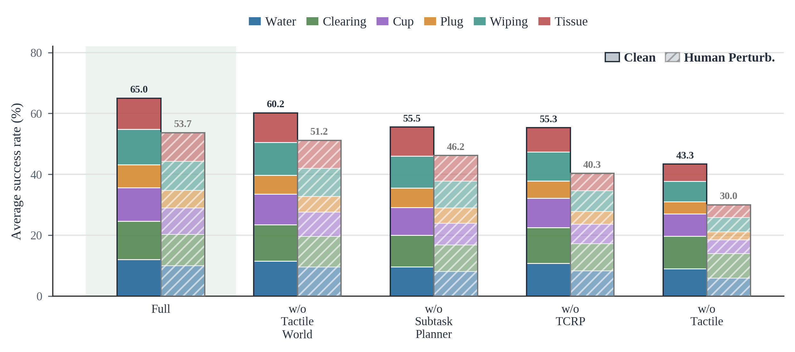
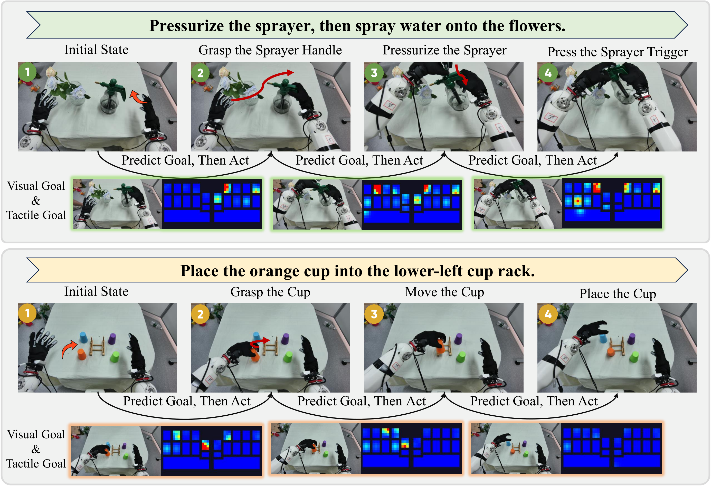
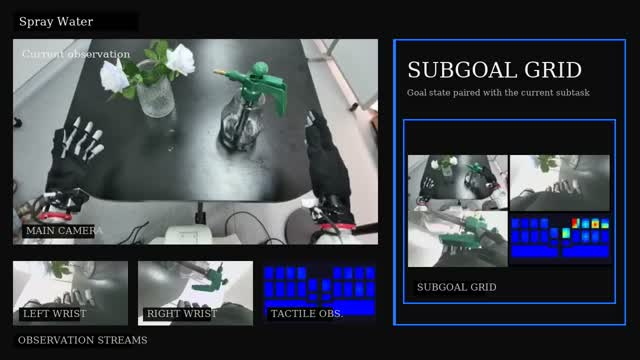
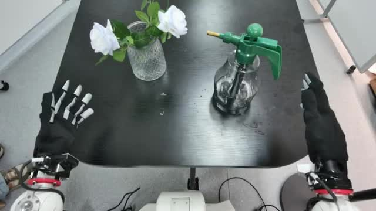
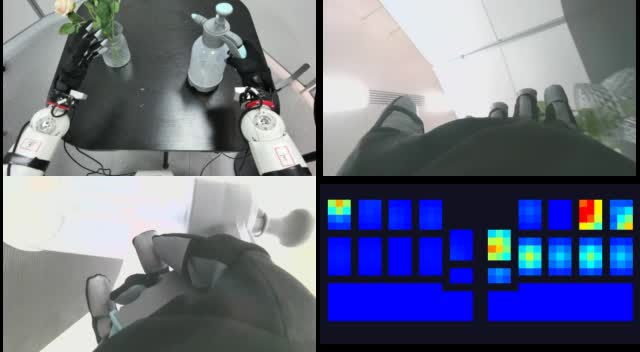
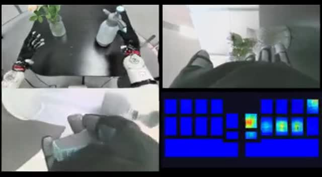

- 원제: TouchWorld: A Predictive and Reactive Tactile Foundation Model for Dexterous Manipulation
- 버전: arXiv:2607.07287v2 (2026-07-09)
- 분야: Robotics (cs.RO)
- 프로젝트 페이지 영상 4건을 로컬 자산으로 보존했다.
- tactile, policy, action, control, nominal/residual은 기술 문맥을 위해 혼합 표기한다.
- dexterous manipulation은 첫 문맥에서 촉각 기반 정교 조작의 의미로 읽되 원어를 유지한다.
- foundation model은 파운데이션 모델, VLA는 VLA/비전-언어-액션으로 표기한다.
- embodiment는 robot 몸체 문맥을 유지하며 ‘실체’로 옮기지 않는다.
- 모델명·데이터셋명·metric·수치·하이퍼파라미터는 원문 표기를 보존한다.
초록
일상 환경에서의 dexterous manipulation에는 예측과 반응이 모두 필요하다. 즉, robot은 contact가 어떻게 전개되어야 하는지 예측하는 동시에 slip, misalignment, unstable grasping 또는 force mismatch로 인해 발생하는 local error를 신속하게 correction해야 한다. Vision과 language는 semantic 및 geometric guidance를 제공하지만 force, slip, contact stability와 같이 겉으로 드러나지 않는 contact state를 신뢰성 있게 파악하지는 못한다. Tactile sensing은 이러한 physical cue를 드러내지만, 기존 policy 대부분은 touch를 monolithic action model 내부의 low-frequency observation stream으로 취급하여 느린 task reasoning, action generation, 빠른 contact feedback을 하나의 loop에 결합한다.
본 연구에서는 dexterous manipulation을 위한 predictive-and-reactive tactile foundation model인 TouchWorld를 제안한다. TouchWorld는 vision-language subtask planning, tactile world-model prediction, visuo-tactile goal-conditioned action generation, high-frequency tactile residual refinement를 분리하는 hierarchical policy를 사용한다. High-Level Planning Layer는 실행 가능한 subtask를 생성하고 tactile subgoal을 예측하며, Visuo-Tactile Goal-Conditioned Policy는 nominal action chunk를 생성하고, Tactile-Conditioned Refinement Policy는 최근 tactile 및 proprioceptive feedback을 사용해 online residual correction을 수행한다. TouchWorld는 touch를 predictive contact reference이자 빠른 feedback signal로 모두 활용함으로써 vision-language-action policy의 semantic generalization을 유지하면서 local contact adaptation을 향상한다. 여섯 가지 long-horizon 및 contact-rich dexterous manipulation task에서 TouchWorld는 clean setting에서 65.0%, human perturbation 상황에서 53.7%의 success를 달성하여 가장 강력한 baseline을 각각 15.7 및 18.5 percentage point 능가한다.
1 서론
일상 환경에서 작동하는 robot은 단순히 물체에 도달하고 물체를 이동하는 수준을 넘어서는 manipulation task를 수행해야 한다. 물 주기, power-plug insertion, cup insertion, tissue pulling과 같은 많은 일상 skill에서는 robot이 contact가 어떻게 전개되어야 하는지 예측하고 실제 contact가 예상에서 벗어날 때 반응해야 한다. Vision과 language는 semantic 및 geometric guidance를 제공하지만 grasp가 안정적인지, 물체가 미끄러지는지, insertion이 정렬되었는지 또는 가해진 force가 적절한지를 파악하지 못하는 경우가 많다. Tactile feedback은 이러한 local contact state에 직접 접근할 수 있게 하므로[6, 7, 26, 29, 31, 33], robust한 contact-rich manipulation에 필수적이다. 이로 인해 자연스럽게 multi-timescale control 문제가 발생한다. Semantic task reasoning은 느리게 전개되고, visuo-tactile action generation은 중간 수준의 action-chunk rate로 작동하며, tactile feedback은 contact가 변할 때 빠른 local correction을 지원해야 한다.
Vision-language-action policy가 최근 발전했음에도[2, 4, 8–12, 16, 18, 20, 32], 기존 system 대부분은 여전히 하나의 monolithic model을 통해 action을 생성한다. Tactile observation을 사용할 수 있는 경우에도 흔히 이를 추가 input token으로 덧붙여 visual-language context와 같은 rate로 처리한다[25]. 이러한 design은 contact-rich manipulation과 잘 맞지 않는다[21, 22]. 느린 semantic reasoning, 중간 속도의 action-chunk generation, 빠른 contact correction이 동일한 model capacity와 control loop를 공유하도록 강제되기 때문이다[3, 30]. 그 결과 policy가 task를 이해하고 그럴듯한 motion을 생성하더라도 stable grasping, force regulation, slip recovery 또는 precise insertion에 빠른 tactile feedback이 필요하면 여전히 실패할 수 있다.
본 연구에서는 dexterous manipulation을 위한 predictive-and-reactive tactile foundation model인 TouchWorld를 제안한다. TouchWorld는 touch를 두 가지 상호 보완적인 방식으로 사용하는 hierarchical manipulation policy로 구현한다. Predictive pathway는 미래의 contact-aware goal을 예측하고, reactive pathway는 local execution error를 online으로 correction한다. 이 system은 multi-timescale hierarchy로 구성된다. High-Level Planning Layer는 느린 semantic rate로 실행되며, 실행 가능한 subtask를 생성하는 Subtask Planner와 현재 subtask의 tactile subgoal을 예측하는 Tactile World Model을 포함한다. Visuo-Tactile Goal-Conditioned Policy는 중간 수준의 action-chunk rate로 실행되며 subtask, 예측된 tactile subgoal, visual observation, proprioception, tactile observation으로부터 nominal action chunk를 생성한다. Tactile-Conditioned Refinement Policy는 최근 tactile 및 proprioceptive history를 사용하여 robot control loop 내부에서 local residual correction을 갱신한다.
이러한 design은 semantic reasoning, predictive goal generation, tactile feedback correction을 서로 다른 time scale로 유지한다. High-Level Planning Layer 내부에서 Subtask Planner는 long-horizon structure를 제공하고 Tactile World Model은 contact-aware execution을 위한 미래의 visual-tactile subgoal을 제공하는 한편, refinement policy는 실제 contact가 prediction에서 벗어날 때 빠른 feedback path를 제공한다. 이들 component는 함께 vision-language-action policy의 semantic generalization을 유지하면서 contact-rich dexterous manipulation의 robustness를 강화한다.

본 연구의 핵심 질문은 semantic planning, tactile world-model prediction, visuo-tactile action generation, tactile-conditioned feedback refinement를 명시적으로 분리함으로써 tactile foundation policy가 contact-rich long-horizon manipulation에서 더 robust해질 수 있는가이다. 이 질문에 답하기 위해 TouchWorld를 세 가지 capability, 즉 long-horizon task를 위한 semantic decomposition, action generation을 위한 predictive tactile-goal conditioning, local contact perturbation 아래에서의 reactive tactile correction을 중심으로 설계한다. TouchWorld는 여섯 가지 real-robot task와 Water Flower, Tabletop Clearing, Cup Insertion, Power Plug Insertion, Pot Wiping, Tissue Pulling의 여섯 real-robot task와 각 task의 human-perturbation variant에서 평가한다. TouchWorld는 clean setting에서 평균 success 65.0%, human perturbation 아래에서 53.7%를 달성하여 가장 강력한 baseline을 각각 15.7 및 18.5 percentage point 능가한다.
본 연구의 주요 contribution은 세 가지이다.
- Dexterous manipulation을 위한 최초의 predictive-and-reactive tactile foundation model인 TouchWorld를 제안한다. TouchWorld는 tactile-goal prediction과 online tactile feedback correction을 함께 지원하는 hierarchical manipulation policy로 구현된다.
- Subtask Planner와 Tactile World Model을 포함하는 느린 High-Level Planning Layer를 visuo-tactile goal-conditioned action generation 및 high-frequency tactile residual refinement와 결합하는 multi-timescale tactile policy architecture를 개발한다.
- Clean setting과 human-perturbation setting을 갖춘 여섯 가지 task의 real-robot benchmark를 구축한다. 이 benchmark에서 TouchWorld는 clean setting에서 평균 success 65.0%, human perturbation 아래에서 53.7%를 달성하여 가장 강력한 baseline을 각각 15.7 및 18.5 percentage point 능가한다.
2 방법
Task instruction , 현재 multi-view image , proprioceptive state , tactile observation , high-level memory 가 주어지면 TouchWorld는 High-Level Planning Layer와 두 action policy를 통해 실행할 action 를 예측한다. High-Level Planning Layer는 Subtask Planner와 Tactile World Model로 구성된다.
(1)
(2)
(3)
(4)
여기서 , , , 는 각각 Subtask Planner, Tactile World Model, Visuo-Tactile Goal-Conditioned Policy, Tactile-Conditioned Refinement Policy를 나타낸다. 변수 는 시점 의 실행 가능한 subtask이고, 는 해당 subtask에 대해 예측된 visual-tactile subgoal이다. Memory 는 이전 subtask, 예측된 tactile subgoal, 실행 상태를 저장한다. Nominal policy는 nominal action chunk 와 context token 를 출력하며, 여기서 는 nominal action horizon이다. 현재 chunk 내부의 refinement step 에서 refinement policy는 길이 의 sliding nominal-action lookahead window를 최근 proprioceptive history 및 tactile history 와 함께 사용하며, 여기서 는 feedback-history length이다. Controller는 high-rate control 동안 correction된 이 window에서 현재 action 를 실행한다.

2.1 High-Level Planning Layer
High-Level Planning Layer는 느린 semantic reasoning과 predictive goal generation을 수행한다. 이 layer는 Subtask Planner와 Tactile World Model로 구성되며, 둘 다 high-level memory 를 바탕으로 작동한다.
Subtask Planner. Subtask Planner는 task instruction, 현재 visual observation, high-level memory를 입력받은 다음 downstream control을 위한 compact task state를 유지한다. Low-level command를 생성하는 대신 느린 rate로 task의 semantic phase를 갱신하고, downstream policy conditioning을 위한 실행 가능한 subtask를 내보낸다. Memory 는 이전 subtask, 예측된 subgoal, 실행 상태를 전달하므로 Subtask Planner는 각 update에서 현재 observation만 사용하면서도 task progress를 추론할 수 있다.
Structured Subtask Planner output은 다음과 같이 표현한다.
(5)
여기서 는 structured planner output이고, 은 원래 task instruction이며, 는 실행 가능한 subtask이고, 는 선택적인 free-form reasoning이다. 원래 task instruction과 실행 가능한 subtask는 모두 lower-level VLA policy에 제공하지만, free-form reasoning은 action interface 외부에 둔다.
Tactile World Model. Tactile World Model은 High-Level Planning Layer의 predictive component를 제공한다. 현재 observation과 high-level state를 condition으로 삼아 현재 subtask의 예상 contact outcome을 기술하는 미래 visual-tactile subgoal을 예측한다. 이러한 prediction은 Subtask Planner가 새로운 subtask 또는 유의미한 task-state change를 감지할 때만 갱신되므로, 안정적인 task phase에서는 미래 prediction을 반복해서 다시 생성하는 대신 이전 tactile subgoal을 재사용한다. 예측된 subgoal은 Visuo-Tactile Goal-Conditioned Policy를 위한 contact-aware reference 역할을 한다.
2.2 Visuo-Tactile Goal-Conditioned Policy
Visuo-Tactile Goal-Conditioned Policy는 tactile diffusion Transformer policy이다. 이 policy는 현재 subtask, visual observation, proprioception, tactile observation을 입력받아 nominal action chunk를 예측한다. Nominal VLA policy에서는 tactile observation을 unified image representation으로 변환하고 vision-language branch에서 visual observation과 함께 처리한다. 이어서 diffusion Transformer action expert가 visual, tactile-image, language, proprioceptive context를 condition으로 삼아 flow-matching action generation을 수행한다. Tactile World Model prediction을 사용할 수 있으면 예측된 subgoal image 또는 tactile subgoal latent를 추가 goal context로 덧붙일 수 있고, 그렇지 않으면 policy는 현재 observation과 현재 subtask만을 condition으로 삼는다.
가 visuo-tactile policy에 전달되는 prompt를 나타낸다고 하자. 이 prompt는 원래 task instruction과 현재 실행 가능한 subtask를 모두 사용하여 다음과 같이 구성한다.
(6)
여기서 는 string concatenation을 나타낸다. 이 prompt는 long-horizon task context를 보존하면서 현재 control target을 명시적으로 유지한다.
Tactile image representation. Nominal policy는 단일 image-form tactile interface를 사용한다. Raw tactile reading을 tactile image로 rendering하거나 normalization하므로 VLA backbone은 tactile input을 visual observation과 동일한 representation 형식으로 입력받는다. 이 설계는 nominal action policy가 image-language pretraining과 호환되도록 유지하며 VLA branch에 modality-specific tactile encoder를 도입하지 않도록 한다.
Action generation. Policy는 flow matching을 사용하여 action chunk 를 예측한다. Training 중에는 data action과 Gaussian noise 사이의 interpolation에서 noisy action을 sampling한다. Inference 중에는 model이 Gaussian noise에서 시작하여 예측한 velocity field를 적분함으로써 nominal action sequence를 생성한다.
2.3 Tactile-Conditioned Refinement Policy
Tactile-Conditioned Refinement Policy는 nominal action chunk를 국소적으로 correction된 action window로 변환한다. 이 policy는 Visuo-Tactile Goal-Conditioned Policy보다 빠른 feedback rate로 작동하므로 다음 nominal chunk를 기다리지 않고 contact change를 control에 반영할 수 있다. 이 policy는 Tactile Residual Transformer(TRT)로 구현한다. Refinement step 에서 TRT는 sliding nominal-action lookahead window, 최근 proprioceptive history 및 tactile history, policy context token을 입력받아 residual action window를 예측한다.
(7)
(8)
여기서 는 parameter 를 갖는 residual Transformer이고, 는 nominal lookahead window에 더하는 residual action window이다. Nominal VLA policy와 달리 TRT는 high-frequency tactile history를 직접 처리한다. 서로 다른 tactile signal type은 residual Transformer에서 fusion하기 전에 modality-specific lightweight encoder로 encoding한다. Image-like tactile map은 tactile image로 처리하고, matrix tactile reading은 convolutional layer로 encoding하며, low-dimensional tactile state는 Fourier feature와 MLP로 embedding한다. Deployment 시 controller는 correction된 window에서 처음 개의 action을 실행한 뒤 새로 관측한 tactile feedback으로 residual prediction을 갱신한다. 그 결과로 얻는 feedback rate는 robot control frequency, sensing pipeline, commit interval 에 따라 달라진다. 이 policy는 residual controller로 학습한다. 즉, nominal action은 Visuo-Tactile Goal-Conditioned Policy가 생성하고, target residual은 residual action subspace에서 demonstration의 high-frequency action과 nominal action의 차이이다.
Residual correction을 사용하는 이유. Residual correction은 refinement policy의 역할을 국소적이고 집중된 범위로 제한한다. Visuo-tactile goal-conditioned policy는 semantic 및 geometric progress를 계속 담당하고, tactile-conditioned refinement policy는 local contact error를 correction하기 위해 nominal action만 조정한다. Tactile history는 short-range이고 local하며 slip, impact, insertion misalignment 같은 contact transition 부근에서 가장 많은 정보를 제공하므로, 이와 같은 분리는 fast control에 중요하다.
Scheduling design. 다음과 같은 slow-to-fast hierarchy를 목표로 한다.
- High-Level Planning Layer: 느린 semantic update와 tactile subgoal refresh.
- Visuo-Tactile Goal-Conditioned Policy: 중간 속도의 nominal action-chunk generation.
- Tactile-Conditioned Refinement Policy: robot control loop 내부에서 반복하는 residual refresh.
이러한 schedule은 architectural constraint가 아니라 implementation choice이다. Data loader와 deployment wrapper는 실제 hardware control rate에 따라 visual, tactile, proprioceptive history를 align한다.
3 학습
TouchWorld는 네 단계로 학습한다. 전체 hierarchy를 end-to-end로 back-propagation하지 않고, 먼저 각 module을 해당 time scale에 맞는 supervision signal로 학습한 뒤 최종 refinement 단계에서 학습된 nominal VLA policy와 reactive tactile layer를 결합한다. 이러한 단계별 방식은 optimization 중 high-level reasoning, predictive goal generation, nominal action learning, high-frequency tactile correction을 서로 분리된 상태로 유지한다.
3.1 단계 1: Subtask Planner 학습
Subtask Planner는 Qwen3-VL-4B-Instruct[23]를 기반으로 구현하고 annotated teleoperation trace로부터 적응시킨다. 각 supervision example은 global task instruction, 현재 camera observation, 최근 Subtask Planner state의 compact memory, 현재 phase의 executable subtask label로 구성된다. Subtask Planner data는 deployment에 사용하는 semantic update rate로 sampling하며, 이전 subtask, 오래된 history, phase transition을 model에 노출하는 memory variant를 포함한다. Subtask Planner dataset은 128,866개의 supervision record를 포함한다. Training target은 low-level robot command가 아니라 현재 executable subtask이므로, fine-tuned planner는 downstream control을 위한 policy-compatible semantic interface를 학습한다.
3.2 단계 2: Tactile World Model 학습
Tactile World Model은 Wan2.2-TI2V-5B[19]를 기반으로 구현하고 predictive subgoal generator로 별도 학습한다. 먼저 synchronized egocentric 및 wrist-mounted video, bimanual hand pose, dense bilateral palm pressure map을 제공하는 대규모 EgoTouch human interaction video data[34]로 pretraining한다. 이 pretraining 단계는 model을 다양한 human-object contact pattern에 노출하고, robot-specific policy training에 앞서 general visual-to-tactile dynamics prior를 학습시킨다. Human tactile layout은 robot tactile glove와 다르므로 image-form tactile representation을 공통 prediction interface로 사용한다. 즉, EgoTouch pressure map과 robot tactile observation을 모두 visual-tactile goal grid로 변환한다.
Human tactile pretraining 후에는 10시간의 robot demonstration으로 Tactile World Model을 fine-tuning하며, 이는 30 FPS 기준 약 108만 robot frame에 해당한다. 현재 observation grid와 선택된 executable subtask가 주어지면, model은 예상 contact outcome을 기술하는 짧은 future visual-tactile clip 또는 terminal subgoal state를 예측한다. Robot training sample은 subtask-aligned demonstration segment로 구성한다. 각 sample은 source observation과 해상도 의 미래 17-frame visual-tactile target을 짝지은 것이다. 이 2단계 training 방식은 model이 human bimanual touch에서 폭넓은 contact prior를 물려받는 동시에 최종 tactile subgoal을 robot embodiment와 task interface에 적응하도록 한다.
3.3 단계 3: Visuo-Tactile Goal-Conditioned Policy 학습
이어서 Visuo-Tactile Goal-Conditioned Policy를 독립적인 nominal action policy로 학습한다. 각 sample은 global task instruction, 현재 executable subtask, RGB observation, image-form tactile observation, proprioceptive state, demonstration의 future action chunk로 구성된다. 2.2절에서 설명한 것처럼 policy prompt에는 항상 task-level context와 현재 subtask를 모두 포함한다. Action decoder는 imitation learning과 flow matching으로 학습하므로, policy는 visual, tactile-image, language, proprioceptive conditioning 아래 현재 subtask를 진전시키는 nominal action chunk를 생성하는 법을 학습한다. 예측된 visual-tactile subgoal을 사용할 수 있으면 이를 추가 goal context로 사용하며, 그렇지 않으면 현재 observation과 subtask prompt만으로 policy를 학습하고 평가한다.
3.4 단계 4: 통합 VLA-Refinement 학습
마지막으로 reactive tactile refinement layer로 구현한 Tactile-Conditioned Refinement Policy를 학습된 VLA policy에 부착하고, 결합된 VLA-refinement stack을 high-frequency residual target으로 학습한다. 각 demonstration window에서 VLA policy는 nominal action chunk 와 그 action-generation context token 를 제공한다. 해당 chunk 내부의 각 refinement step 에서 TRT는 sliding nominal-action lookahead window, 최근 tactile history, 현재 proprioception, VLA context를 입력받아 residual action window 를 예측한다. Target residual은 demonstration의 high-frequency action window와 이에 대응하는 nominal VLA lookahead window의 차이이다.
(9)
여기서 는 feedback-refinement loss이고, 는 demonstration의 high-frequency action window이다. Loss는 tactile-sensitive residual action subspace에 적용하며, 이 subspace 밖의 action dimension은 nominal VLA output을 따른다. 이 최종 단계는 nominal policy가 semantic 및 geometric progress를 담당하도록 유지하면서 deployment와 동일한 action context에서 refinement layer를 학습한다.

4 실험
TouchWorld를 long-horizon reasoning, contact-aware action generation, local contact disturbance로부터의 recovery가 필요한 real-robot manipulation task에서 평가한다. 실험은 네 가지 질문에 답한다. (1) TouchWorld가 강력한 generalist baseline 및 tactile-policy baseline보다 task success를 향상시키는가, (2) 어떤 predictive 및 reactive component가 robustness에 가장 크게 기여하는가, (3) Tactile World Model이 실제 contact outcome과 일치하는 tactile subgoal을 예측하는가, (4) Subtask Planner가 downstream policy로 실행할 수 있는 subtask를 생성하는가이다.
4.1 실험 설정
Hardware setup은 그림 3에 제시한다. Teleoperation 측에서 demonstrator는 immersive visual feedback을 위해 Meta Quest headset을 착용하고, Meta Quest Touch Plus controllers와 Wuji Glove를 함께 사용해 hand-motion command를 제공한다. Robot 측에서는 Wuji dexterous hands를 장착한 humanoid platform이 manipulation policy를 실행하며, hand에 장착된 JQ-Industries tactile glove가 tactile-conditioned action generation과 refinement를 위한 contact observation을 제공한다. 이 setup은 동일한 visual, proprioceptive, tactile sensing interface 아래 teleoperated data collection과 policy evaluation을 지원한다.
Policy scheduling. 본 구현에서 nominal VLA policy는 인 action chunk를 예측한다. Refinement layer는 인 sliding nominal-action lookahead window를 사용하며, residual prediction을 갱신하기 전에 correction된 action 중 첫 개를 commit한다. 예를 들어 nominal chunk를 기준으로 step 0 실행 전에는 TRT가 nominal action 를 condition으로 사용하고 corrected action 을 commit하며, step 4 전에는 nominal action 를 condition으로 사용하고 corrected action 을 commit한다. 이 값들은 architectural constraint가 아니라 implementation hyperparameter이며, 결과적인 feedback rate는 robot control frequency와 sensing pipeline에 따라 달라진다.
서로 다른 tactile manipulation failure mode를 포괄하는 6개 task의 real-robot suite에서 평가한다. 그림 4에 제시한 여섯 task에는 Water Flower와 Tabletop Clearing 같은 long-horizon semantic manipulation, Cup Insertion과 Power Plug Insertion 같은 precision contact task, Pot Wiping의 continuous contact regulation, Tissue Pulling의 soft-object handling이 포함된다. 각 task는 clean setting과 human perturbation setting에서 평가한다. Perturbation setting에서는 실행 중 operator가 target displacement, unstable contact, grasp interference 같은 disturbance를 가한다. 이 setup은 TouchWorld의 의도된 역할, 즉 Subtask Planner의 semantic decomposition, Tactile World Model의 predictive contact goal, Visuo-Tactile Goal-Conditioned Policy의 nominal action generation, Tactile-Conditioned Refinement Policy의 high-frequency correction을 시험한다. 각 task마다 teleoperated training trajectory 200개를 수집하고 real-robot evaluation rollout 100회를 수행한다.

Real-robot experiment에서는 두 setting 모두에서 반복 rollout의 success rate를 보고한다. Wuji data pipeline은 평가 task의 teleoperated trajectory를 export한다. 각 trajectory는 global task instruction, 수동으로 annotation한 subtask segment, head 및 wrist camera stream, proprioceptive state, action, left/right tactile pressure observation과 함께 export된다. 이 annotation은 subtask-conditioned policy training, Tactile World Model supervision, residual refinement training, Subtask Planner evaluation을 지원한다.
4.2 Baseline
Main real-robot comparison에서는 TouchWorld를 다음 세 policy baseline과 비교한다.
- Pi-0.5: 동일한 task instruction과 visual observation으로 평가하는 vision-language-action policy baseline이다.
- FTP-1: 제안한 predictive-and-reactive hierarchy를 사용하지 않는 이전 monolithic tactile policy baseline이다.
- GR00T N1.7: 동일한 real-robot task suite에서 평가하는 generalist robot policy baseline이다.
Component ablation은 그림 5에서 별도로 보고한다.
4.3 주요 결과
| Method | Water Flower | Tabletop Clearing | Cup Insertion | Power Plug Insertion | Pot Wiping | Tissue Pulling | Avg. |
|---|---|---|---|---|---|---|---|
| Clean Setting | |||||||
| Pi-0.5 | 52 | 66 | 36 | 12 | 39 | 39 | 40.7 |
| FTP-1 | 56 | 60 | 48 | 32 | 57 | 43 | 49.3 |
| GR00T N1.7 | 50 | 58 | 33 | 18 | 36 | 41 | 39.3 |
| TouchWorld | 72 | 76 | 66 | 45 | 70 | 61 | 65.0 |
| Human Perturbation Setting | |||||||
| Pi-0.5 | 34 | 44 | 24 | 6 | 28 | 30 | 27.7 |
| FTP-1 | 39 | 42 | 34 | 20 | 42 | 34 | 35.2 |
| GR00T N1.7 | 32 | 36 | 21 | 9 | 26 | 32 | 26.0 |
| TouchWorld | 60 | 62 | 52 | 35 | 57 | 56 | 53.7 |
표 1의 결과에서 TouchWorld는 clean rollout과 human-perturbed rollout 모두에서 baseline을 일관되게 능가한다. Clean setting에서 TouchWorld는 평균 success 65.0%를 달성해 가장 강한 baseline보다 15.7 percentage point 향상된다. Human perturbation 아래에서는 평균 success 53.7%를 달성해 가장 강한 baseline보다 18.5 percentage point 향상된다. 이러한 이득은 tactile prediction과 빠른 local correction이 가장 중요한 power plug insertion, pot wiping, tissue pulling에서 특히 뚜렷하다. TouchWorld는 water flower와 tabletop clearing에서도 성능을 향상시키며, 이는 hierarchy가 high-level task execution을 보존하면서 contact-aware manipulation을 강화함을 보여준다.
4.4 Ablation 연구

그림 5은 주요 interface 및 feedback 선택이 여섯 task suite의 평균 성능에 미치는 영향을 요약한다. Stacked visualization은 전체 success rate와 각 평균을 구성하는 task composition을 함께 보여주므로, 특정 component가 주로 long-horizon task, precision-contact task, soft-object task 중 무엇에 영향을 주는지 더 쉽게 살펴볼 수 있다. 다음 design choice를 ablation한다.
- Subtask Planner: subtask decomposition을 제거하고 original task prompt를 policy에 직접 condition으로 제공한다.
- Tactile World Model: future visual-tactile goal prediction을 제거하고 현재 observation과 현재 subtask만 policy에 condition으로 제공한다.
- Tactile-Conditioned Refinement Policy: residual feedback layer를 제거하고 nominal action chunk를 직접 실행한다.
- Tactile input: touch sensing의 기여도를 측정하기 위해 policy input에서 tactile observation을 제거한다.
Tactile input을 제거할 때 성능이 가장 크게 하락하며, 이는 contact observation이 이 benchmark에 필수임을 확인한다. Tactile-Conditioned Refinement Policy를 제거하면 system이 local execution error를 online으로 correction해야 하는 human perturbation setting에서 특히 큰 손실이 발생한다. Subtask Planner 제거는 주로 long-horizon consistency를 낮추는 반면, Tactile World Model 제거는 contact-aware goal conditioning을 약화한다.
4.5 Tactile World Model 예측 분석
Tactile World Model이 robot이 도달한 contact state와 일치하는 tactile subgoal을 예측하는지 추가로 평가한다. 각 held-out trajectory에서 source observation과 executable subtask를 sampling하고, 17-frame visual-tactile goal clip을 생성한 뒤 동일 rollout의 실제 future segment와 align한다. Ground-truth tactile goal은 robot이 해당 subtask에 annotation된 subgoal state에 도달했을 때 포착한 tactile pressure observation이다. 17-frame window에 걸친 temporal contact accuracy로 예측된 tactile sequence를 평가하고, pressure map을 에서 thresholding한 뒤 contact IoU와 volumetric IoU로 terminal tactile goal을 평가한다. 현재 tactile observation을 future goal로 복사하는 persistence baseline 및 task와 subtask label을 사용해 training set에서 subgoal을 retrieve하는 nearest-neighbor baseline과 비교한다.
| Method | Temporal Contact Acc. | Contact IoU | Volumetric IoU |
|---|---|---|---|
| Current tactile copy | 70.4 | 31.8 | 24.6 |
| Nearest-neighbor subgoal | 77.5 | 39.2 | 31.0 |
| Tactile World Model | 86.3 | 52.7 | 43.8 |
표 2은 Tactile World Model이 단순한 persistence baseline 또는 retrieval baseline보다 훨씬 정확한 contact timing과 terminal tactile geometry를 예측함을 보여준다. 이는 downstream goal-conditioned policy를 위한 predictive contact reference라는 Tactile World Model의 역할을 뒷받침한다.
4.6 Vision-Language Subtask Planner 분석
Vision-Language Subtask Planner가 semantically correct하면서 downstream policy로 실행할 수 있는 subtask를 생성하는지 분석한다. Subtask Planner output은 두 가지 방식으로 실패할 수 있다. (1) scene에 잘못된 subtask를 선택하거나, (2) 올바르지만 policy의 학습된 behavior distribution 밖에 있는 subtask를 선택할 수 있다. 따라서 task phase에 걸친 subtask correctness, downstream execution success, transition F1을 보고한다.
| Planner | Subtask Acc. | Execution Success | Transition F1 |
|---|---|---|---|
| Zero-shot Qwen3-VL-4B[23] | 43 | 34 | 62 |
| Zero-shot Qwen3-VL-32B[23] | 69 | 54 | 71 |
| SFT Qwen3-VL-4B w/o Memory | 73 | 60 | 76 |
| Memory-Augmented SFT Qwen3-VL-4B (Ours) | 88 | 65 | 82 |
표 3은 supervised subtask tuning이 zero-shot planning보다 성능을 높이고, Subtask Planner memory가 phase-transition consistency를 더욱 향상시킴을 보여준다. Memory-augmented 4B Subtask Planner는 zero-shot 32B planner보다 우수하며, 이는 이 interface에서는 model scale만 키우는 것보다 task-phase supervision과 execution history가 더 중요함을 시사한다.
4.7 정성적 inference 분석
대표적인 long-horizon manipulation task에서 inference process를 추가로 시각화한다. 그림 6에 제시한 것처럼 TouchWorld는 각 instruction을 실행 가능한 intermediate subtask로 분해하고, downstream action generation에 contact-aware reference를 제공하는 tactile subgoal을 예측한다.

5 논의 및 한계
TouchWorld는 tactile prediction과 tactile feedback refinement를 실용적인 manipulation policy에 결합할 수 있음을 보여주지만, 여전히 몇 가지 한계가 남아 있다. 첫째, real-robot 평가는 접촉이 많은 대표 task 여섯 가지에 초점을 맞춘다. 이 task들은 planning, insertion, wiping, soft-object handling을 포괄하지만, household manipulation이나 deformable-object interaction의 다양성을 아직 모두 망라하지는 않는다. Benchmark를 더 많은 object, workspace, task composition으로 확장하는 것이 중요한 다음 단계이다.
둘째, Tactile World Model은 현재 short-horizon visual-tactile subgoal을 예측한다. 이는 contact-aware subtask execution에는 충분하지만, object motion, hand occlusion, human perturbation으로 인해 타당한 미래가 여러 가지로 갈릴 때는 longer-horizon prediction이 여전히 어렵다. 향후에는 uncertainty-aware subgoal prediction을 도입하거나 downstream selection을 위해 여러 candidate tactile subgoal을 생성함으로써 이 component를 개선할 수 있다.
셋째, TouchWorld는 robot platform에서 사용한 sensing layout에 종속된다. Policy는 nominal VLA branch에서 image-form tactile observation을 사용하고 refinement branch에서 high-frequency tactile history를 사용한다. 이 설계는 modular하지만, 다른 tactile sensor나 hand morphology로 전이하려면 여전히 calibration, normalization, 그리고 소량의 adaptation data가 필요할 가능성이 크다.
마지막으로 이 hierarchy에는 High-Level Planning Layer의 update rate, Tactile World Model의 refresh rule, nominal action chunk length, residual commit interval을 비롯한 scheduling hyperparameter가 도입된다. 본 연구에서는 task에 잘 작동한 고정 scheduling profile을 사용한다. 더 adaptive한 scheduling은 contact dynamics가 빠르게 변할 때 computation을 더 줄이고 responsiveness를 향상할 수 있다.
6 결론
본 연구에서는 dexterous manipulation을 위한 predictive-and-reactive tactile foundation model인 TouchWorld를 제시한다. TouchWorld는 vision-language subtask planning과 Tactile World Model prediction을 포함하는 High-Level Planning Layer를 visuo-tactile goal-conditioned action generation 및 high-frequency tactile residual refinement와 결합한 hierarchical manipulation policy로 구현한다. 이 설계는 touch를 contact-aware goal generation을 위한 predictive cue인 동시에 online correction을 위한 빠른 feedback signal로 다룬다. 여섯 가지 real-robot task 전반에서 TouchWorld는 clean setting과 human-perturbed setting 모두의 평균 success를 향상하며, semantic planning, predictive tactile subgoal, nominal action generation, reactive tactile feedback을 명시적으로 분리할 때의 이점을 보여준다. 향후에는 task suite를 확장하고 uncertainty-aware tactile goal prediction을 개선하며, tactile sensor와 robot hand 전반에 걸친 더 폭넓은 transfer를 연구할 것이다.
부록 A. 관련 연구
Vision-language-action robot foundation policy. 최근 robot foundation policy는 대규모 robot data, vision-language pretraining, diffusion 또는 flow matching action decoder, cross-embodiment training을 통해 범용 manipulation을 위한 vision-language-action model을 빠르게 확장해 왔다[9, 16, 18, 20]. 이러한 model은 semantic grounding과 language-conditioned action generation을 향상하지만, 여전히 주로 visual observation과 action-level supervision에 의존한다. 접촉이 많은 dexterous manipulation에서는 slip, grasp stability, contact force, insertion progress와 같은 핵심 physical state를 vision만으로 추론하기 어렵다. TouchWorld는 hierarchical VLA framework에 tactile-conditioned action generation과 high-frequency tactile refinement를 도입하여 이러한 연구 흐름을 확장한다.
촉각 표현 학습과 tactile manipulation policy. Tactile sensing은 pressure, deformation, slip, hand-object interaction을 비롯한 local contact state를 직접 측정하며, 이러한 state는 RGB observation만으로 신뢰성 있게 추론하기 어렵다. GelSight[27] 및 DIGIT[13]과 같은 high-resolution tactile sensor는 dense contact perception을 가능하게 했으며, 선행 연구에서는 visuo-tactile prediction[15], visual pressure estimation[5, 24], egocentric human interaction으로부터의 tactile estimation[34]을 연구했다. 최근의 tactile manipulation policy는 이러한 tactile representation을 기반으로 접촉이 많은 manipulation을 위한 robot action model에 touch를 통합한다. FTP-1은 이질적인 tactile sensor와 접촉이 많은 task 전반으로 tactile policy learning을 확장하며[25], T-Rex는 high-frequency tactile signal을 reactive control에 활용하여 tactile-reactive dexterous manipulation을 연구한다[17]. 이러한 연구는 tactile observation이 perception뿐 아니라 contact-aware action generation에도 유용함을 보여준다. 그러나 tactile observation은 추가 modality로서 monolithic policy에 융합되거나 action-generation loop 내에서 주로 reactive cue로 사용되는 경우가 많다. 반면 TouchWorld는 touch에 상호 보완적인 두 역할, 즉 visual-tactile goal generation을 위한 predictive signal과 high-frequency residual refinement를 위한 빠른 feedback signal을 부여한다. 이러한 분리를 통해 visuo-tactile policy는 semantic 및 geometric progress를 유지하는 한편, tactile refinement layer는 online contact adaptation을 수행할 수 있다.
계층적·예측적·반응적 manipulation policy. Long-horizon manipulation은 high-level task structure와 low-level control을 분리할 때 이점을 얻는 경우가 많다. 선행 연구에서는 single-step command 대신 시간적으로 일관된 short-horizon action sequence를 생성하기 위해 action chunking과 diffusion 기반 visuomotor policy를 연구했다[1, 3, 30]. Hierarchical robot policy는 language-level reasoning과 local execution을 연결하기 위해 subtask, path, visual goal과 같은 intermediate representation을 추가로 사용한다[14]. Predictive policy와 robot world model은 미래 visual state, goal trajectory 또는 latent dynamics를 예측하여 goal-conditioned action generation을 유도함으로써 이 아이디어를 확장한다[28, 35]. 이와 동시에 reactive tactile policy와 residual controller는 최근의 tactile 또는 force feedback을 사용하여 접촉이 많은 manipulation 중 local execution error를 수정한다[21, 31]. 그러나 이러한 연구 방향은 흔히 별도로 다뤄진다. Hierarchical 및 predictive policy는 주로 language 또는 visual goal에 의존하는 반면, reactive tactile policy는 명시적인 long-horizon semantic structure 없이 local contact adaptation에 초점을 맞춘다. TouchWorld는 실행 가능한 subtask planning, predictive visual-tactile goal, nominal action-chunk generation, online tactile residual refinement를 결합함으로써 이러한 아이디어를 통합된 tactile VLA framework 안에서 아우른다.
부록 B. 구현 세부사항
High-Level Planning Layer. High-Level Planning Layer는 Subtask Planner와 Tactile World Model로 구성된다. Subtask Planner는 Qwen3-VL-4B-Instruct로 초기화하고 supervised LoRA fine-tuning으로 적응시킨다. Subtask Planner는 task instruction, 현재 camera observation, 최근 subtask와 execution state의 compact memory를 입력받아 downstream policy가 사용할 실행 가능한 subtask를 예측한다. 실험에서 High-Level Planning Layer는 고정된 느린 semantic rate로 update한다. 오래되거나 반복되는 history에도 Subtask Planner가 강건하도록 SFT set에는 teacher label, oversampling한 rare phase, noisy-memory variant를 포함한다. 그 결과로 얻은 Subtask Planner dataset은 이 semantic update rate로 sampling한 record 128,866개를 포함한다. LoRA rank 16, alpha 32, dropout 0.05, learning rate , warmup ratio 0.1의 cosine decay, bfloat16 training, 20 epochs를 사용한다. Inference 시에는 선택한 subtask만 manipulation policy에 전달하며, intermediate reasoning은 logging과 analysis에만 사용한다.
Visuo-Tactile Goal-Conditioned Policy. Nominal manipulation policy는 visuo-tactile diffusion Transformer로 구현한다. 이 policy는 multi-view RGB observation, image로 rendering한 현재 tactile observation, 사용할 수 있는 경우 Tactile World Model이 예측한 goal grid, proprioceptive state, 그리고 original task와 현재 subtask를 이어 붙인 language prompt를 입력받는다. 이 VLA branch에서는 sensor type별로 별도의 tactile encoder를 사용하지 않고 tactile input을 일관되게 image-form context로 표현한다. Model은 visual, tactile-image, language input을 context token으로 encoding하고 Transformer action expert로 action token을 denoising한다. Wuji platform에서 policy는 32-step action horizon에 걸쳐 120-dimensional action vector를 예측한다. Action vector는 두 개의 48-dimensional arm-hand action representation, 9-dimensional head action, 15개의 reserved dimension으로 구성된다. Training에는 teleoperation action target과 zarr training set에서 계산한 normalization statistics를 사용한다. Nominal policy는 global batch size 32, bfloat16 precision, AdamW, 1.0의 gradient clipping, 그리고 1,000 warmup steps, peak learning rate , final learning rate 을 적용한 cosine learning-rate schedule로 30,000 optimization steps 동안 학습한다.
Tactile World Model. Tactile World Model은 Wan2.2-TI2V-5B로부터 fine-tuning하며, 현재 multimodal context와 선택한 subtask를 condition으로 short-horizon visual-tactile subgoal observation을 예측한다. 각 training sample은 external RGB view와 tactile-image observation을 포함하는 2-by-2 observation grid에 task 및 subtask text를 함께 넣은 형식으로 구성한다. Tactile World Model은 대규모 human interaction video data와 10시간의 robot demonstration data를 사용한다. 30 FPS에서 robot demonstration은 약 1.08 million robot frame에 해당한다. Robot training sample에는 resolution의 17-frame clip을 사용한다. World model은 DiT attention 및 feed-forward projection에 LoRA를 적용하여 적응시키며, target module , rank 64, learning rate , 50 epochs를 사용한다. Deployment 중에도 High-Level Planning Layer는 느린 semantic rate로 update하지만, Tactile World Model은 high-level memory가 의미 있는 subtask 또는 task-state change를 나타낼 때만 refresh한다. 현재 phase가 바뀌지 않으면 system은 이전에 예측한 goal을 재사용하며, 이를 통해 안정적인 execution phase에서 world model을 반복 호출하지 않는다.
Tactile-Conditioned Refinement Policy. Refinement layer는 최근 tactile history, proprioceptive state, sliding nominal-action lookahead window, VLA context token을 처리하는 compact Tactile Residual Transformer인 TRT로 구현한다. VLA branch와 달리 이 layer는 서로 다른 tactile signal type에 대해 structured tactile history와 modality-specific tactile tokenization을 사용한다. 구현에서는 최근의 contact change를 포착하는 짧은 causal tactile window를 사용한다. TRT는 인 sliding nominal-action lookahead window를 입력받아 동일한 horizon의 residual window를 예측한다. Nominal VLA는 여전히 전체 120-dimensional action을 생성하지만, residual layer는 두 wrist pose block과 선택한 hand joint를 포괄하는 58-dimensional tactile-sensitive action subspace에서만 학습한다. 예측한 residual은 120-dimensional action vector에 다시 scatter하고, 나머지 action dimension은 nominal VLA output을 유지한다. Residual Transformer는 , 여덟 개 layer, 여덟 개 attention head, -step residual query set, 의 작은 residual regularization weight를 사용한다. Residual training에서는 학습된 nominal VLA를 refinement layer에 부착해 frozen 상태로 유지하고, residual actor와 tactile feedback encoder는 corrected action window와 demonstration action window 사이의 masked MSE로 optimization한다. Learning rate , weight decay 의 AdamW와 nominal policy와 동일한 action normalization을 사용한다.
Deployment schedule. 전체 system은 multi-rate execution schedule을 사용한다. High-Level Planning Layer는 느린 semantic rate로 동작한다. Tactile World Model은 Subtask Planner가 subtask 또는 contact-relevant phase를 변경할 때만 호출한다. Visuo-tactile policy는 horizon 의 nominal action chunk를 생성한다. 각 chunk 안에서 TRT는 stride (예: offset )로 인 sliding nominal-action lookahead window를 refinement하고, residual prediction을 refresh하기 전에 corrected action 중 첫 개를 commit한다. 예를 들어 TRT는 nominal action 를 condition으로 사용해 corrected action 을 commit한 다음, 를 condition으로 사용해 을 commit한다. 실제 feedback rate는 robot control frequency, sensing pipeline, commit interval 에 따라 달라진다. Subtask Planner 또는 Tactile World Model을 사용할 수 없으면 system은 original task prompt로 fallback하고 predicted-goal conditioning을 비활성화하되, visuo-tactile policy와 tactile refinement layer는 계속 실행할 수 있다.
프로젝트 페이지 영상 자산
논문 프로젝트 페이지에 공개된 TouchWorld 시연과 Tactile World Model 예측 영상을 원문 자산과 함께 보존한다.




참고문헌
- Kevin Black et al. (2025). Real-Time Execution of Action Chunking Flow Policies.
- Kevin Black et al. (2026). π_0: A Vision-Language-Action Flow Model for General Robot Control.
- Chi, Cheng et al. (2025). Diffusion policy: Visuomotor policy learning via action diffusion.
- Weisheng Dai et al. (2026). ConLA: Contrastive Latent Action Learning from Human Videos for Robotic Manipulation.
- Grady, Patrick et al. (2024). PressureVision++: Estimating Fingertip Pressure from Diverse RGB Images.
- Jialei Huang et al. (2025). Tactile-VLA: Unlocking Vision-Language-Action Model's Physical Knowledge for Tactile Generalization.
- Jialei Huang et al. (2026). Spatially anchored Tactile Awareness for Robust Dexterous Manipulation.
- Physical Intelligence et al. (2025). π^*_0.6: a VLA That Learns From Experience.
- Physical Intelligence et al. (2025). π_0.5: a Vision-Language-Action Model with Open-World Generalization.
- Physical Intelligence et al. (2026). π_0.7: a Steerable Generalist Robotic Foundation Model with Emergent Capabilities.
- Kim, Moo Jin et al. (2024). Openvla: An open-source vision-language-action model.
- Moo Jin Kim et al. (2025). Fine-Tuning Vision-Language-Action Models: Optimizing Speed and Success.
- Lambeta, Mike et al. (2020). DIGIT: A Novel Design for a Low-Cost Compact High-Resolution Tactile Sensor with Application to In-Hand Manipulation.
- Yi Li et al. (2025). HAMSTER: Hierarchical Action Models For Open-World Robot Manipulation.
- Li, Yunzhu et al. (2019). Connecting Touch and Vision via Cross-Modal Prediction.
- Songming Liu et al. (2025). RDT-1B: a Diffusion Foundation Model for Bimanual Manipulation.
- Dantong Niu et al. (2026). T-Rex: Tactile-Reactive Dexterous Manipulation.
- NVIDIA et al. (2025). GR00T N1: An Open Foundation Model for Generalist Humanoid Robots.
- Team Wan et al. (2025). Wan: Open and Advanced Large-Scale Video Generative Models.
- Qiuyue Wang et al. (2026). Qwen-VLA: Unifying Vision-Language-Action Modeling across Tasks, Environments, and Robot Embodiments.
- Han Xue et al. (2025). Reactive Diffusion Policy: Slow-Fast Visual-Tactile Policy Learning for Contact-Rich Manipulation.
- Xue, Teng et al. (2026). Tube Diffusion Policy: Reactive Visual-Tactile Policy Learning for Contact-rich Manipulation.
- An Yang et al. (2025). Qwen3 Technical Report.
- Yang, Patrick Grady et al. (2022). PressureVision: Estimating Hand Pressure from a Single RGB Image.
- Chengbo Yuan et al. (2026). FTP-1: A Generalist Foundation Tactile Policy Across Tactile Sensors for Contact-Rich Manipulation.
- Haoran Yuan et al. (2026). VTAM: Video-Tactile-Action Models for Complex Physical Interaction Beyond VLAs.
- Yuan, Wenzhen et al. (2017). Gelsight: High-resolution robot tactile sensors for estimating geometry and force.
- Yujie Zang et al. (2026). TacForeSight: Force-Guided Tactile World Model for Contact-Rich Manipulation.
- Zongzheng Zhang et al. (2025). TA-VLA: Elucidating the Design Space of Torque-aware Vision-Language-Action Models.
- Tony Z. Zhao et al. (2023). Learning Fine-Grained Bimanual Manipulation with Low-Cost Hardware.
- Zifan Zhao et al. (2025). Touch begins where vision ends: Generalizable policies for contact-rich manipulation.
- Ruijie Zheng et al. (2026). EgoScale: Scaling Dexterous Manipulation with Diverse Egocentric Human Data.
- Yuhang Zheng et al. (2026). OmniVTA: Visuo-Tactile World Modeling for Contact-Rich Robotic Manipulation.
- Jianyi Zhou et al. (2026). TouchAnything: A Dataset and Framework for Bimanual Tactile Estimation from Egocentric Video.
- Pengfei Zhou et al. (2025). Act2Goal: From World Model To General Goal-conditioned Policy.